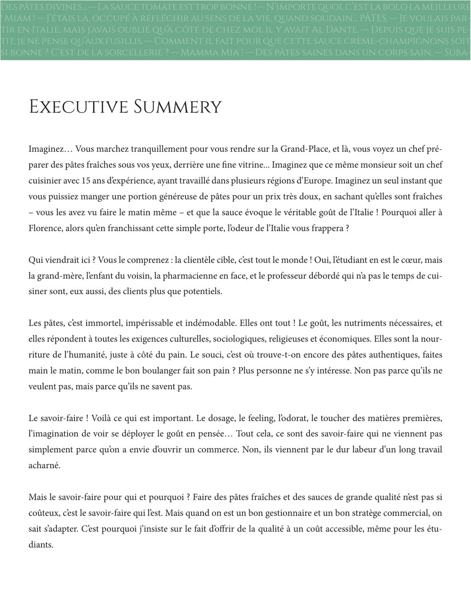
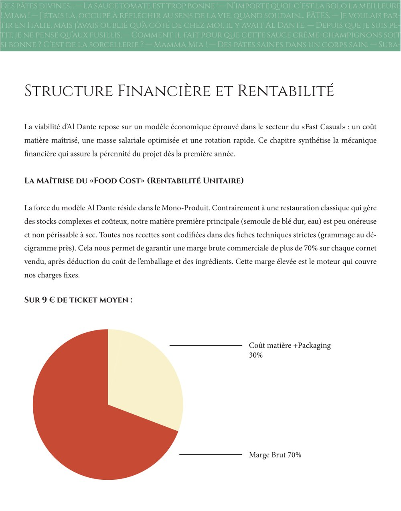
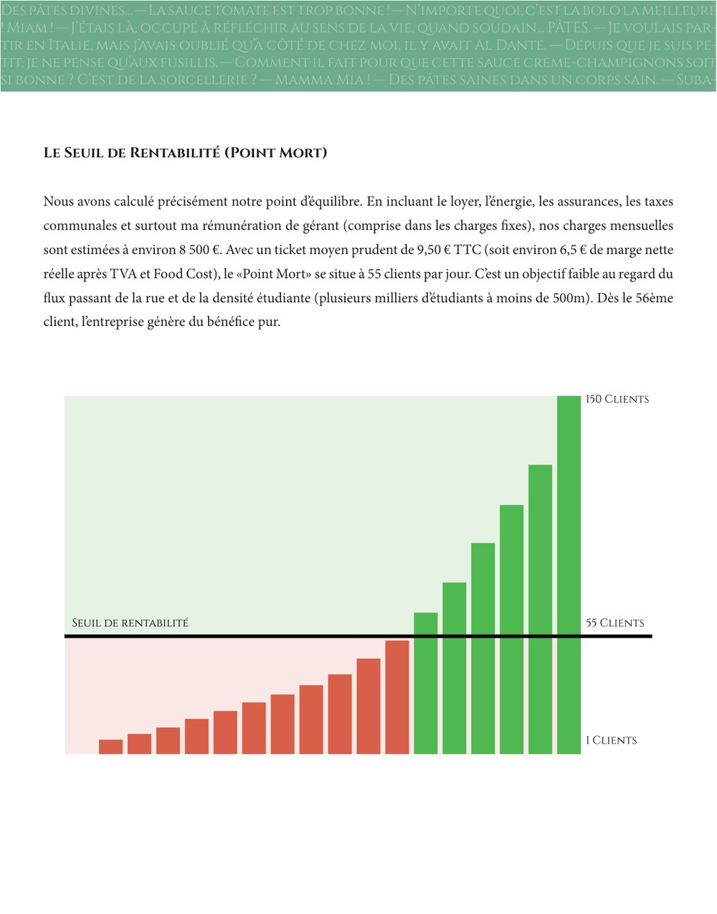

Business plans — Étude 03
Al Dante — bar à pâtes artisanales
Exercice d'analyse et de rédaction : établir le business plan d'un concept de restauration rapide fondé sur un produit unique — des pâtes fraîches produites sur place. Al Dante est un nom de marque inventé.
Contexte
L'exercice consistait à évaluer un concept « fast casual » mono-produit — un bar à pâtes fraîches artisanales préparées devant le client — implanté en centre-ville de Mons, ville à la fois étudiante et administrative.
Le local retenu se situe à proximité immédiate des flux étudiants et des zones de bureaux, sur un axe desservant le centre. L'étude devait s'appuyer sur des données réelles : structure du marché, comportements de recherche locaux, offre concurrente et logique de coûts du mono-produit.
Méthode
L'étude a été construite en trois volets :
- étude de marché — population étudiante et administration de la ville, attentes de la pause déjeuner et offre de restauration rapide disponible sur la zone ;
- analyse concurrentielle — distinction de la concurrence directe (« pâtes »), de la restauration rapide internationale et de l'offre thématique (asiatique, italienne traditionnelle), puis positionnement sur le couple prix / rapidité / qualité ;
- modélisation économique — coût matière et marge brute du mono-produit, calcul du seuil de rentabilité et prévision de chiffre d'affaires sur trois exercices.
Résultat
Les tableaux ci-dessous reprennent les indicateurs économiques et les prévisions de chiffre d'affaires retenus dans l'étude. Les valeurs proviennent du document source. Le détail des charges figure dans les captures ci-dessous.
| Indicateur | Valeur |
|---|---|
| Marge brute commerciale (après coût matière et emballage) | plus de 70 % |
| Ticket moyen retenu | 9,50 € |
| Seuil de rentabilité (point mort) | 55 clients par jour |
| Besoin en fonds de roulement | négatif (encaissement comptant, fournisseurs payés à 30 jours) |
| Exercice | Chiffre d'affaires prévisionnel |
|---|---|
| Année 1 — 9 mois d'activité (ouverture en avril) | 135 000 € |
| Année 2 — première année pleine | 180 000 € |
| Année 3 — croissance de +5 % | 189 000 € |



Ce que cela démontre
Construction d'une étude de marché et d'une analyse concurrentielle pour positionner un concept mono-produit sur un créneau inoccupé. Lecture d'une structure de coûts — coût matière, marge brute, seuil de rentabilité et besoin en fonds de roulement — pour juger de la solidité d'un modèle dès les faibles volumes.